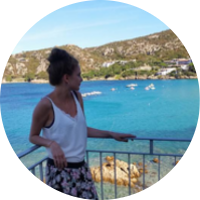

Salon
The beauty of a woman must be seen from in her eyes, because that is the doorway to her heart, the place where love resides.
Audrey Hepburn
Désirée Calonder
Bereits als junges Mädchen habe ich mich für Mode, Trends und Hair-Styling interessiert, weswegen die Berufswahl zur Hairstylistin schnell getroffen war. Nach einer umfassenden Ausbildung im Coiffeur-Geschäft Nellen in Romanshorn im Jahre 2006, habe ich als Filialleiterin bis zum Frühsommer 2015 in der Hairbox in Oberaach gearbeitet.
Stetige Weiterbildungen und das Verfolgen aktueller Trends liegen mir sehr am Herzen, weswegen ich vor drei Jahren die zusätzliche Ausbildung zur Nail-Designerin absolviert habe. Im September 2015 konnte ich mir schliesslich meinen Kindheitstraum erfüllen, indem ich mein eigenes Geschäft in Häggenschwil-Winden im Kanton Thurgau eröffnete.
@amélie le panda.